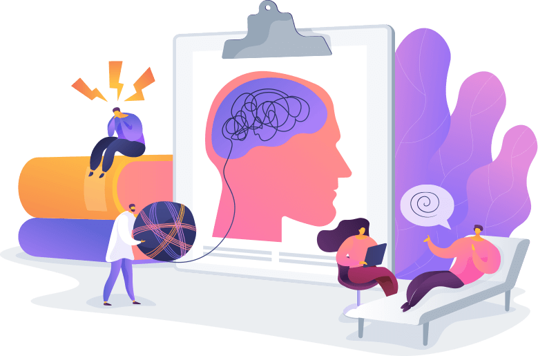

Soy Clarisa Tones, Licenciada en Psicología de la Universidad del Salvador. Trabajo con orientación Cogntitiva-Conductual.
La mayor parte de mi carrera profesional trabajé de forma interdisciplinaria con otros profesionales asistiendo a familias y personas con condición de espectro autista. Afianzando mi formación para aspirar a tratamientos de calidad y eficiencia, personalizados. A lo largo de los años he trabajado en múltiples funciones: asistencia individual, grupal, orientación a padres, formando profesionales y supervisando casos.
Más adelante sumé a mi camino la atención a víctimas de violencia, brindando información, acompañamiento y contención emocional procurando llegar nuevamente a la salud con tratamiento sobre la angustia, la autoestima y la autogestión emocional.
En los últimos años he ejercido como docente de nivel secundario y actualmente estoy realizando una formación en este rubro.
Psicóloga Online
Accede a tu terapia online desde tu casa, trabajo o donde estés. Profesionalidad y atención personalizada.
